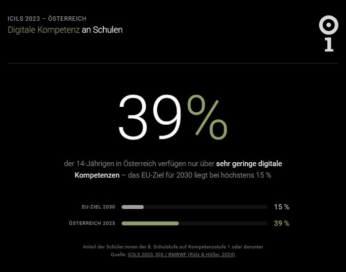

From the 2027/28 school year, “Media and Democracy” will be a mandatory subject in the AHS upper secondary (Austrian academic secondary school). Federal Minister for Education Christoph Wiederkehr (NEOS) fixed the plan with the coalition partners at the beginning of 2026. The new curriculum is meant to teach students how public opinion forms, how media shape opinions, how disinformation works – and how to position oneself in relation to it. Not only theoretically, but by having students create their own media content.
The curriculum is one thing. How schools implement it is another.
This guide summarises what has been decided – and which experiences from ongoing media and democracy projects show what works. i.appear has been working with schools in Vorarlberg on exactly this topic since 2022. The education strand i.grow has been designed from the start along the competences that the new curriculum now makes mandatory.
Curriculum reform Media and Democracy: the key points
- Mandatory subject “Media and Democracy” from the 2027/28 school year in AHS upper secondary, around 2 weekly hours per year spread across the four upper secondary years.
- School autonomy in implementation: Each school decides for itself whether to teach the subject as a stand-alone subject or to integrate it as a bundle into existing subjects (such as German, History, Civic Education).
- Computer Science is renamed to “Computer Science and Artificial Intelligence” and expanded by one hour. The AI reform and the new mandatory subject are coordinated.
- Funding source: Latin in AHS upper secondary is reduced from twelve to ten hours; in the Realgymnasium track, the second modern foreign language can be reduced instead.
- Content: critical media analysis, recognising disinformation and radicalisation attempts, engagement with Artificial Intelligence, reflection on opinion formation and mental health – and explicitly also the creation of one’s own media projects.
Why the subject is coming now: the ICILS diagnosis
The reform is an education-policy response to a diagnosis that is currently well documented for Austria. ICILS 2023, the international comparative study on the computer and information literacy of students, tested 14-year-olds in 35 education systems. The result for Austria: 39 percent reach only competence level I or remain below – meaning they can at best superficially process digital content, but cannot independently verify or produce it.
The EU target for 2030 is no more than 15 percent. When significant parts of young people’s political opinion formation happen on smartphones, the ability to put this material into context is no longer optional, but basic education.
What the subject Media and Democracy will cover
The curriculum is formulated in terms of competences – that is, it doesn’t primarily describe what is taught, but what students should be able to do. From the key points published so far, four focal areas can be derived:
- Analyse media. Recognise how news is separated from opinion, advertising and staging. Understand how algorithmic pre-selection in social media works. Be able to check sources.
- Create media. Produce own texts, audio contributions, images, videos or multimedia formats. Consciously choose format and narrative style. Respect copyright and personality rights.
- Understand democracy and the public sphere. How does opinion formation come about? What role do media play in a democracy? Where do distortions arise?
- Take responsibility. How does one deal with one’s own reach? What effect does media consumption have on oneself? What does it mean to take a position in digital spaces?
Points one and three can in principle also be addressed through frontal teaching. Points two and four cannot. Anyone who really wants to understand media production and responsibility has to do it. This isn’t a didactic preference, but a finding from learning theory: knowledge translated into action is more robust than knowledge that is only recited.
This is exactly where implementation becomes demanding.
What schools need for implementation
Three things are on the table as soon as one takes the reform seriously:
Material. Textbook publishers will produce teaching materials. But a textbook alone doesn’t replace the practice of planning, carrying out and reflecting on one’s own media projects. Teachers will look for examples, ready-made concepts and – where possible – external support.
Methodology. Participatory, project-oriented media work isn’t in the standard repertoire of every teacher. That isn’t a criticism, but a consequence of the fact that this subject is new. Continuing education will be important.
Clarity about one’s own school model. Stand-alone subject or bundle? Who coordinates when content is spread across several subjects? How does one document competences that cut across classical subject boundaries?
The reform deliberately gives schools room to manoeuvre. This room is an opportunity, because school cultures differ. It is also a burden, because decisions have to be actively taken.
What already works: experiences from i.grow
i.appear is a platform from Vorarlberg on which location-based digital tours are created. The education strand is called i.grow and has been working with schools since 2022.
Scientific foundation: two master’s theses at the University of Vienna
The platform rests on a twofold scientific foundation – two master’s theses at the University of Vienna that laid the history and the media-ethics foundations:
- Hist.appear – The development of a location-based Augmented Reality application for local history education (Marilena Tumler, teacher-training master’s in History, 2022). This thesis describes how local history can be made location-based and teachable – the foundation that school tours such as Ein Oktobertag build on today.
- Immersive Ethics – The creation of an immersive learning environment for ethics teaching (Marilena Tumler, master’s in Interdisciplinary Ethics, 2024, supervised by Univ.-Prof. DI Dr.techn. Fares Kayali). This thesis shows how immersive learning environments make ethical questions teachable – with the tour Buntes Dornbirn as a worked-out case study.
Both theses are publicly available through the University of Vienna repositories. They are the academic line that supports the school practice of i.grow.
Three school tours in Vorarlberg
Three i.grow tours have emerged from school collaborations and have been publicly available since:
- Buntes Dornbirn – five locations on plural society, value conflicts and dialogical learning. The case study for the master’s thesis Immersive Ethics.
- Ein Oktobertag – five locations in Feldkirch telling the bombing of the city on 1 October 1943. Students worked with archive sources, developed research and dramaturgy independently and published the result. Funded by the Austrian Federal Ministry of Arts, Culture, the Civil Service and Sport / Kunst ist Klasse.
- Zusammenwachsen – four locations by a class of the Mittelschule Levis Feldkirch on values and community. Also funded through Kunst ist Klasse.
In all three projects, young people were not consumers, but authors of digital content. They researched, checked sources, made dramaturgical decisions, produced technically, weighed up ethically and published. Exactly that chain of activities that the new curriculum summarises as “creating one’s own media projects”.
The tours remain accessible – without app installation, without registration, without data collection. That isn’t only about privacy, but also a learning signal: what students produce remains part of public space. It isn’t an exercise that disappears into the exercise book again after grading.
Curriculum mapping: how i.grow covers the new curriculum
The following comparison isn’t something invented for this post – it is the logic according to which i.grow has been developed for years. The basis is a thoroughly worked-through interweaving with the Austrian curricula (Digital Basic Education at lower secondary, Technology and Design, Computer Science AHS upper secondary, as well as the educational areas Language, People and Society, Nature and Technology, Creativity).
| What the new curriculum requires | How i.grow translates this into practice |
|---|---|
| Analyse media, critically check sources | Research in city archives, comparison of archival sources, interviews and online material; explicit source attribution at every location |
| Create own media projects | Students produce texts, audio, images, maps and publish them as a location-based tour |
| Democratic participation, diversity of perspectives | Topic choice in teams, dialogical narration of several perspectives, public presentation to parents, municipality, urban society |
| Dealing with Artificial Intelligence | AI tools are used in teaching with reflection – not hidden, but openly discussed: where it makes sense, where the limits are |
| Privacy, personality rights, copyright | Privacy by Design in the tool itself (no tracking, no data collection) and reflection at every publication |
| Responsibility in public space | Content goes online under one’s own name, is permanently visible, used by others – self-efficacy and responsibility in one |
The didactic model behind this follows three lines: inquiry-based learning (archive, interview, research), creative practice (storytelling, audio, image, map) and continuous reflection (What are we doing right now? What effect does it have? What would be fair?). In the terms of Digital Basic Education, this covers the areas of Information, Communication, Production and Action, and makes the Frankfurt Triangle (technology, society, interaction) concretely workable.
Where i.grow stands today: collaborations 2026
i.grow has not just been around since the 2027/28 curriculum reform. The initiative is currently working on several connections to the Austrian education system:
- Education Directorate Vorarlberg – a modular building-block concept for schools is in place. It covers different project sizes, from a multi-day taster project to a year-long programme.
- University of Teacher Education Vorarlberg (PH Vorarlberg) – lecture practice and continuing-education formats in the area of media ethics are established. Teachers can get to know i.grow as a method before they use it with a class.
- FH Vorarlberg University of Applied Sciences – Marilena Tumler is a research associate at the Design Department and teaches there, among other things, media ethics and design futuring. Research and practice interlock.
- OeAD marketplace for learning apps – the application for regular operation 2026/27 was submitted in March 2026. Official acceptance is currently still pending.
- Workshop partnerships in the area of AI and media democracy are in preparation. As soon as they are publicly announced, they will appear here.
- Collaborations with STEM initiatives and fact-checking actors are in conversation.
This list is deliberately neither complete nor final. Some things are done, others are running, others are open. That is exactly the phase the reform is in – and it mirrors the phase in which schools currently have to set themselves up.
Three entry formats for schools before 2027/28
The reform comes into force in 2027/28. Anyone who wants to start there with confidence is well served with a year of preparation. i.grow offers three entry formats in which schools can try out, without risk, what fits their own school culture:
Taster project
One or two days, a mini-project with a small class. Goal: experience how participatory media work concretely functions. Suitable for decision-making in the teaching staff, without committing to a larger format.
Project package
Several days or weeks, a complete cycle of research, production and publication. Throughout, work happens together with the teachers so that the method can later also be carried on without external support.
Year-long programme
Progressively distributed over a school year, with several projects of different depth. Suitable for schools that want to make media production a strategic part of school culture.
In all three formats, the teacher is part of the process, not a spectator. That is intentional. Anyone who has carried out participatory media work with a class can then also lead it themselves – and that is exactly what the 2027/28 reform will require from the school.
Frequently asked questions
When does the mandatory subject Media and Democracy come into force?
From the start of the 2027/28 school year, in Austrian AHS upper secondary schools.
How many hours does the new subject have?
Around two weekly hours per year, spread across the four upper secondary years.
Do schools have to teach Media and Democracy as a stand-alone subject?
No. Schools decide autonomously whether to teach the subject on its own or to integrate it as a bundle into existing subjects such as German, History or Civic Education.
Which subject is being cut to fund the change?
Latin in AHS upper secondary is reduced from twelve to ten hours. In the Realgymnasium track, the second modern foreign language can be cut instead. The total number of upper secondary hours stays unchanged.
What changes in Computer Science teaching?
Computer Science is renamed to “Computer Science and Artificial Intelligence” and expanded by one hour. The AI reform and the new mandatory subject are aligned in terms of content.
What can a school already do before 2027/28?
Set up a pilot class, run an external school project in the field of media production, or train teachers – for example through the University of Teacher Education. Experience before the reform comes into force is the simplest way to avoid pressure in the first year of the reform.
Where clarification is still pending
Several points will only become concrete in the coming months:
- How exactly the two weekly hours per year are distributed across upper secondary is school autonomy. Some schools will concentrate the subject in one year group, others will stretch it across several school years. Both variants are permitted within the reform.
- How the subject is interlocked with “Computer Science and Artificial Intelligence” is a school-internal design decision. The two subjects overlap in content – for example in dealing with AI tools – but are didactically set up differently.
- Which continuing-education offers the Universities of Teacher Education will provide nationwide is currently being built up. Here it’s worth keeping an eye on the calls of the respective PH.
These open points are no argument against preparation – on the contrary. Schools that already set up pilot classes now gain the clarity that the regulation itself doesn’t provide.
Closing: a reform that takes time
“Media and Democracy” is not a fashionable addition to the curriculum. It is an answer to a task that has long been there: enabling young people to act in a self-determined and responsible way in a world saturated with media.
The task is demanding. It requires teachers to learn new methods, schools to adopt new models, and students the willingness to switch from consuming to producing. Above all, it requires time. Schools that get to grips with it now start 2027/28 with experience instead of with pressure.
i.grow is an address for schools that want to start early: six years of experience with location-based media projects, three ongoing school tours in Vorarlberg, a worked-through curriculum interweaving and a platform that takes Privacy by Design seriously.
→ View an example project: Buntes Dornbirn – value conflicts and dialogical learning
→ View an example project: Ein Oktobertag – the bombing of Feldkirch on 1 October 1943
→ For a first conversation: marilena@iappear.app